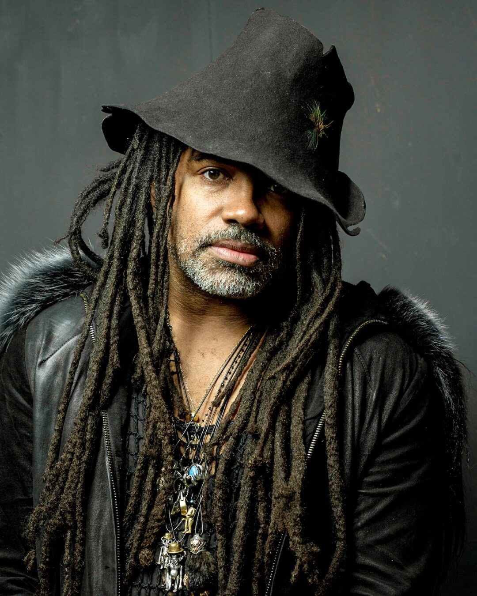

Castro NYC — A Legacy, Reframed

Photo: Simon Groneberg
How Painfully Hueman repositioned the jewelry house Castro NYC as collectible art after its founder died.
Background
Master jeweler Terry Castro died suddenly in 2022. He was working on a collaboration with De Beers, had recently shown at Sotheby’s, and was selling pieces for six figures. Castro NYC was 16 years old, independent, and had no succession plan. Collectors and the press wanted to know whether the house would continue.
A first press push, with a PR firm and a new photo campaign, got little coverage. The photos had no story behind them. The house needed an event that the story could be built around.
Project Design
Painfully Hueman spent several months tracking down pieces from the archive, which were held by galleries and collectors in several countries. It then wrote a brief that guided the next round of press:
- Category: present Castro NYC as collectible art, not commercial jewelry.
- Heritage: tell the story as 16 years of continuous work, not a comeback.
- Persona: keep the new leadership private and low-profile instead of introducing a new public face.
- Pricing: set high prices to support the art-jewelry positioning.
- Future work: mention unfinished and upcoming pieces in interviews, so the story could continue after the show.
The retrospective at Carpenters Workshop Gallery in London put this plan into practice, and the same positioning shaped every interview.
Results
The retrospective reached a combined audience of more than 3 million readers, with coverage in The New York Times, Forbes, Vogue and Wallpaper. Each outlet picked up the same main points in its own reporting. Prices for Castro pieces nearly tripled in the following years.
Castro NYC is now covered as the estate of an internationally recognized artist.